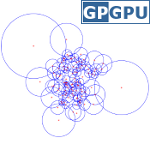
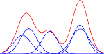
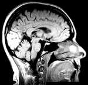

kNN CUDA

kNN-CUDA is a CUDA implementation of the k-nearest neighbor (kNN) search is a problem. kNN search is a problem found in many research and industrial domains such as 3-dimensional object rendering, content-based image retrieval, statistics (estimation of entropies and divergences), biology (gene classification), etc. We propose two GPGPU implementations of the brute-force (exhaustive) kNN search algorithm. These implementations, through the APIs NVIDIA CUDA and NVIDIA CUBLAS, paralellize the kNN search process on the computer's graphic card.
Keywords: kNN, machine learning, GPGPU, CUDA
jMEF

jMEF is an open source Java framework to create, process and manage mixtures of exponential family.
An exponential family is a generic set of probability distributions that includs most of the commonly used distributions such as Gaussian, Poisson, Bernoulli, binomial, multinomial, Laplacian, Gamma, etc.
Mixtures of exponential families provide a generic framework for handling Gaussian mixture models, mixture of Poisson distributions, and Laplacian mixture models as well.
Keywords: Exponential family, mixture models, machine learning, JAVA
RPI

RPI is a lightweight C++ framework for image registration providing a simple and intuitive interface covering most of image registration problems.
RPI uses ITK image and transformation objects: the standard I/O procedures are directly handled by ITK which is developed and maintained by hundred of developers.
RPI is however not based on the ITK registration framework, our approach being more generic and flexible.
RPI is simple, flexible and generic. It allows users to implement and integrate any kind of registration method, from the outdated C or fortran codes to the recent GPGPU implementations.
It simplifies the user experience while helping the author of a new registration method to focus on the algorithm, not on the user interface.
Keywords: Medical images, image registration, ITK, C++
Keypoint detection

Matlab implementation of the most common keypoint detection algorithms:
- Harris
- SUSAN
- Harris-Laplace
- Laplacian of Gaussian (LoG)
- Gilles
Keywords: Corner / keypoint / feature detection, Matlab